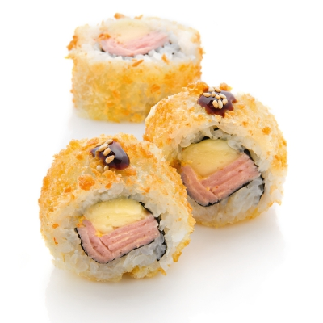

Sushi

Description
Sushi is a Japanese dish of prepared vinegared rice, usually with some sugar and salt, accompanied by a variety of ingredients, such as seafood, often raw, and vegetables.
Ingredients
- Seaweed
- Sushi rice
- Salmon
Steps to make
- Place the seaweed on a bamboo mat, then cover the sheet of seaweed with an even layer of prepared sushi rice. Smooth gently with the rice paddle.
- Layer salmon, cream cheese, and avocado on the rice, and roll it up tightly. Slice with a sharp knife, and enjoy with soy sauce.